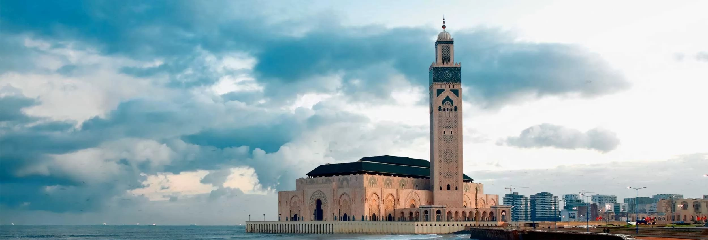

- Spécialité: Pédiatre
- Statut: Disponible
- Nombre de patients en salle d'attente: 10
- Temps d'attente estimé: 250min (4h10)
- Adresse:8 Rue Naceiria Quartier Ancienne Médina
- Téléphone:0522298944
- Spécialité:Pédiatre
- Statut:Disponible
- Nombre de patients en salle d'attente:4
- Temps d'attente estimé:100min (1h40min)
- Adresse:416, Bd Abdelmoumen, Anoual Capital Center, Entrée A 1°ét. n°9 , Franceville
- Téléphone:05 22 86 37 27
- Spécialité:Ophtalmologue
- Statut:Disponible
- Nombre de patients en salle d'attente:4
- Temps d'attente estimé:100min (1h40min)
- Adresse: Bd Moulay Youssef ang. Rue Nadoud, 3°ét. n°5, Q. Bourgogne
- Téléphone:05 22 47 53 90
- Spécialité:Cardiologue
- Statut:Disponible
- Nombre de patients en salle d'attente:5
- Temps d'attente estimé:125min (2h05min)
- Adresse:Clinique Cardiologique Casa-Oasis 20, Rue France-Ville, Oasis Casablanca 20000
Anfa Casablanca
- Téléphone:0522987575
- Spécialité:Cardiologue
- Statut:Disponible
- Nombre de patients en salle d'attente:2
- Temps d'attente estimé:50 min
- Adresse: 193, Bd Oued Oum Errabia , Q. Oulfa
- Téléphone:05 22 90 80 20
- Spécialité:Pédiatre
- Statut:Occupé
- Nombre de patients en salle d'attente: 12
- Temps d'attente estimé:300min (5h)
- Adresse:8 Boulevard Yacoub El mansour Quartier Maarif Extension
- Téléphone:0522258260
- Spécialité:Ophtalmologue
- Statut:Occupé
- Nombre de patients en salle d'attente:12
- Temps d'attente estimé:300min (5h)
- Adresse:11, Bd de la Corniche, 2°ét. , Anfa CASABLANCA
- Téléphone:05 22 20 35 93
- Spécialité:Ophtalmologue
- Statut:Occupé
- Nombre de patients en salle d'attente:12
- Temps d'attente estimé:240min (4h)
- Adresse:22, Bd Yacoub El Mansour, 1°ét. Bur. n°12, Q. Maarif
- Téléphone:05 22 23 42 92
- Spécialité:Cardiologue
- Statut:Occupé
- Nombre de patients en salle d'attente:16
- Temps d'attente estimé:400min (6h40min)
- Adresse: 89, Avenue Stendhal, Appt. n°1, Val fleuri, Q. Maarif, 20390
- Téléphone:05 22 25 45 34